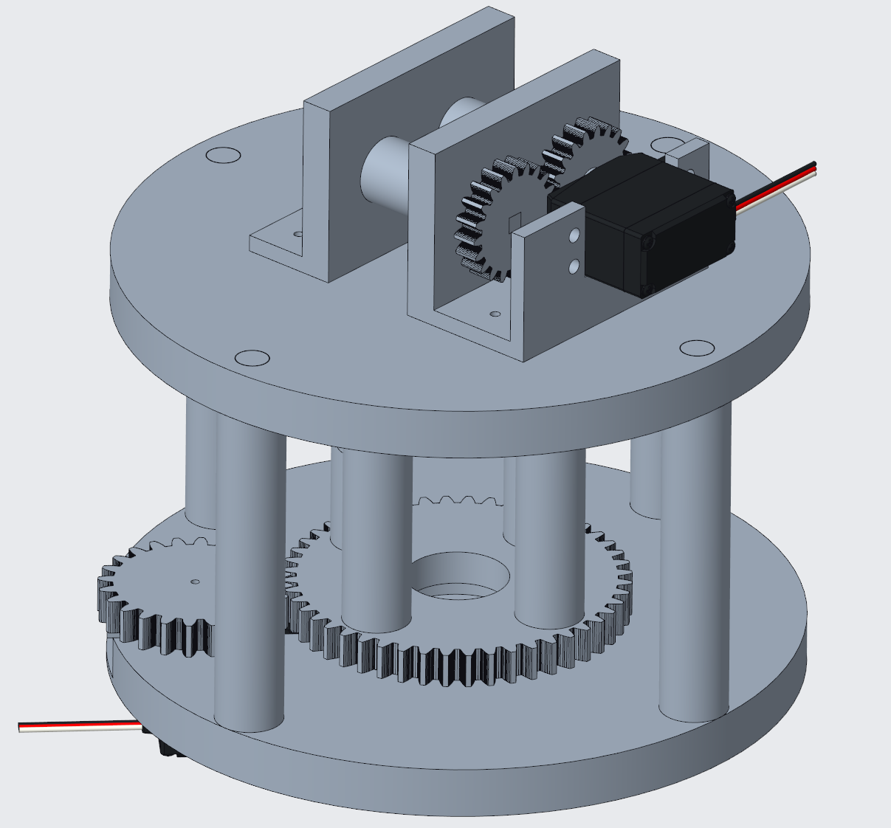
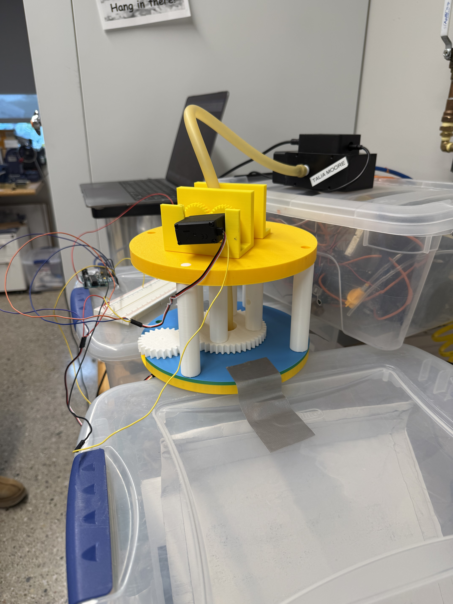

I developed an automated wrapping device for Fiber-Reinforced Elastomeric Enclosures (FREEs) that combines custom mechanical design, embedded control, and kinematic modeling. The system synchronizes dual servo actuation to precisely control fiber wrapping angle, using feedforward calibration, encoder sensing, PID feedback, and signal filtering to achieve repeatable manufacturing. I designed and prototyped the physical system in Onshape and 3D-printed the custom pieces. I also designed experiments to quantify wrapping accuracy and characterize how fiber angle and inflation pressure influence actuator deformation.

